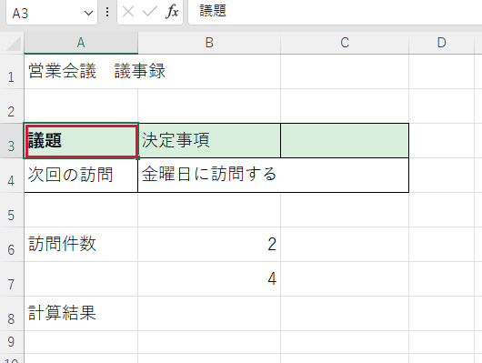

文字や表の見た目を整えたい
表の中の見出しを本文と区別したいときの例です。
操作手順
- 見出しの文字が入っている欄を1回クリックします。緑の枠がその欄を囲みます。
- ［ホーム］をクリックします。フォント（文字の形や大きさ）の設定が表示されます。
- ［B］（太字）をクリックします。選んだ欄の文字が太くなります。

できたか確認
見出しだけが太くなり、本文や罫線が元のままか確認します。
注意点
表全体を選んだ状態で変更すると、すべての欄の見た目が変わります。
表の中の見出しを本文と区別したいときの例です。

見出しだけが太くなり、本文や罫線が元のままか確認します。
表全体を選んだ状態で変更すると、すべての欄の見た目が変わります。